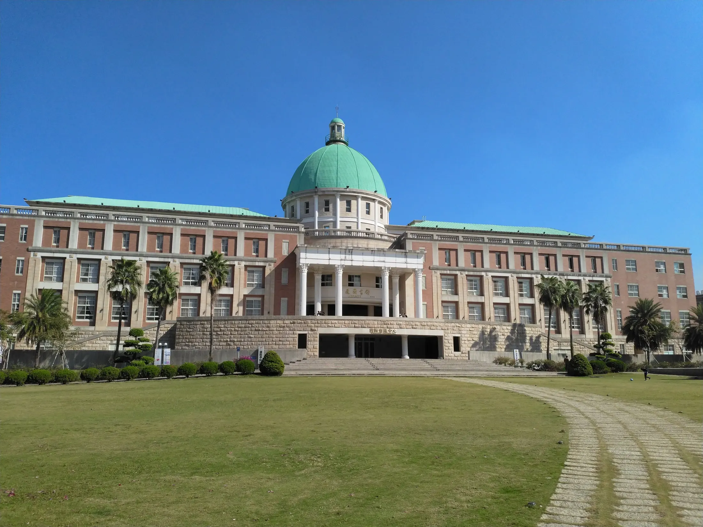

Tecnología
Software, datos, inteligencia artificial, ciberseguridad y diseño digital.

Formación superior
Una universidad conectada con organizaciones, investigación aplicada y mentorías para construir trayectorias profesionales con impacto.
La Hoja integra formación académica, prácticas profesionales y proyectos interdisciplinarios. Cada carrera combina teoría, laboratorio, campo y comunidad.
Software, datos, inteligencia artificial, ciberseguridad y diseño digital.
Administración, marketing, comunicación, finanzas y emprendimiento.
Educación, psicología, bienestar, cultura y transformación social.
Empleabilidad
Mentorías, prácticas, laboratorios y proyectos con organizaciones acompañan la transición hacia la vida profesional.
Ver carreras →